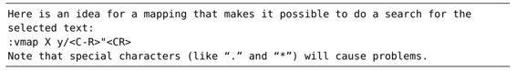
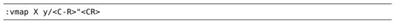

，会发现这样一条建议：
，会发现这样一条建议：技巧86查找当前高亮选区中的文本
在普通模式下，*命令让我们可以查找光标下的单词。通过一小段Vim脚本，我们可以重新定义可视模式下的*命令，使其可以查找当前选中的文本，而不是光标下的单词。
在可视模式下查找当前单词
在可视模式下，*命令将查找光标下的单词。注意观察下面的例子：
首先，我们在可视模式下选中了前3个单词，并将光标置于单词“sea”之上。当我们调用*命令时，会正向查找下一处单词“sea”，结果扩大了高亮选区的范围。尽管此行为与普通模式下的*命令一致，但我觉得毫无用处。
我在对Vim着迷之前，用的是另外一款编辑器，它本身就自带一条“对已选的内容进行查找”的命令，于是，我将其映射为触手可及的快捷键并一直使用它。当我转到Vim工作环境时，却惊奇地发现Vim竟然没有此类功能。而我一直有种错觉，在可视模式下用*命令可以查找当前选中的内容，而不是当前单词。为此，我们可以用一小段Vim脚本，来实现此功能。
查找当前选中的文本（现有技术）
如果你查询:h visual-search，会发现这样一条建议：

下面这个键盘映射能够将当前的选择区作为关键字进行搜索：

注意：某些特殊字符（例如'.'和'*'）可能会引起问题。
首先，y命令会复制当前高亮选区的文本。然后，/<C-r>"<CR>调出查找提示符，并将无名寄存器的内容粘贴进来。最后，执行查找命令。此方案很简单，但正如Vim文档所告诫我们的那样，它有一定的局限性。
在技巧78中，我们已经学过如何克服这些限制。现在让我们将此理论付诸于实践，创建一个可以查找当前选中文本的映射项，不受特殊字符的干扰。
查找当前选中的文本（终极版）
用以下这段Vim脚本就能够完成任务：
你可以直接将这段代码粘贴至你的vimrc文件中，或者安装visual star search插件(2)。
在上面的脚本中，不仅*命令的原有功能被覆盖了，#命令也被重新定义为反向查找选中的文本了。xnoremap关键字指明此映射项只在可视模式下有效，不包括选择模式（参见:h mapmode-x）。
(1) http://github.com/kana/vim-textobj-lastpat
(2) https://github.com/nelstrom/vim-visual-star-search